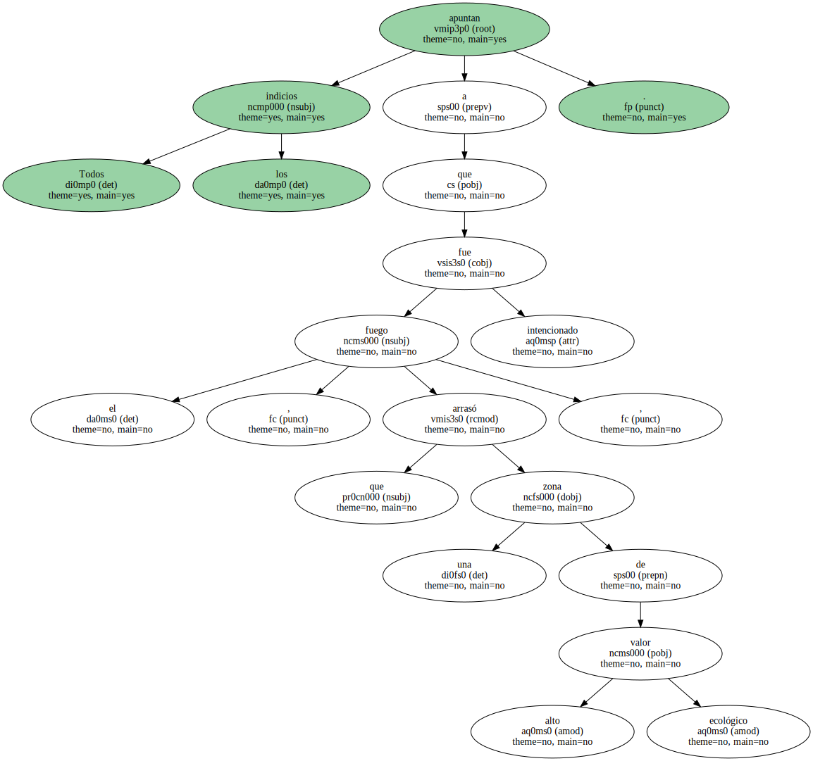
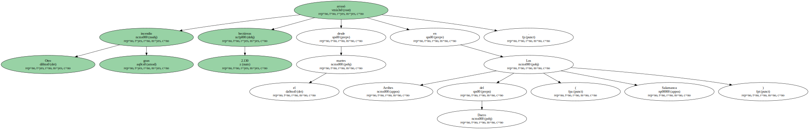
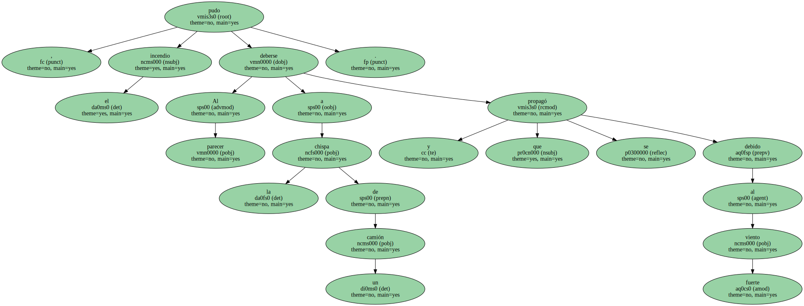
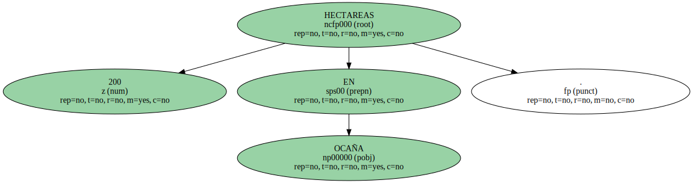
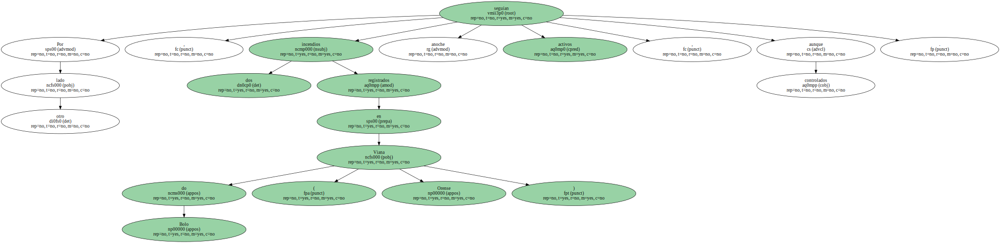
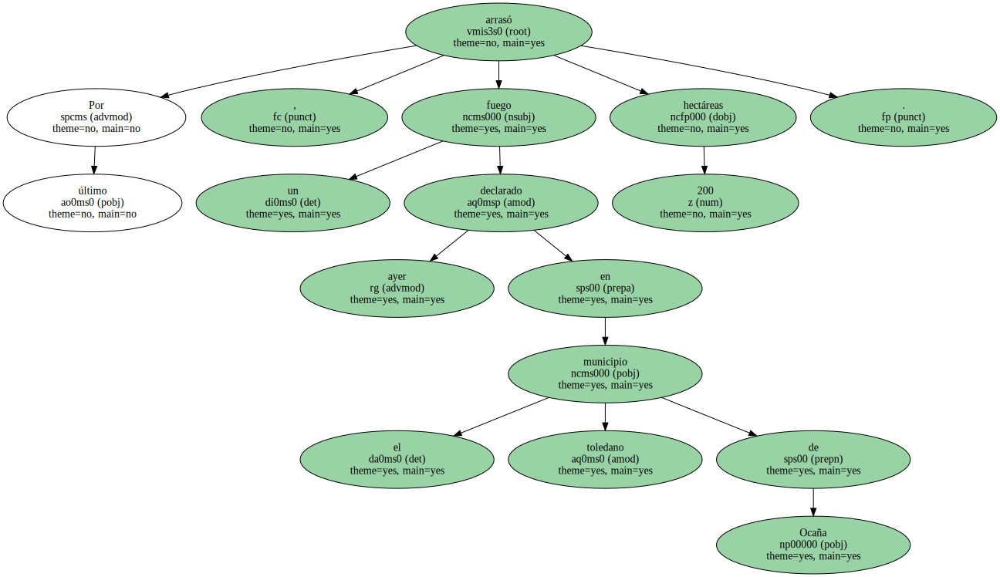

El Parque Natural de Cazorla , Segura y Las Villas , en la provincia de Jaén , sufrió entre el mediodía del martes y la tarde de ayer uno de los mayores incendios que ha afectado a la reserva desde 1986 , en el que han llegado a trabajar cerca de un millar de personas que aún continúan refrescando la zona.
Todos los indicios apuntan a que el fuego , que arrasó una zona de alto valor ecológico , fue intencionado.
En 48 horas nefastas , unas 4.630 hectáreas de seis comunidades autónomas han resultado destruidas por las llamas.

El fuego de Cazorla devoró 836 hectáreas de pino , muy cercanas al núcleo turístico de Arroyo Frío , en el que un 15% de los visitantes proceden de Catalunya , " un mercado creciente y clave " en el desarrollo del ocio de este lugar que tiene 2.000 plazas hoteleras de las 9.000 distribuidas por la reserva , según explicó el presidente de la Federación de Hoteleros de Jaén , Luis Carlos García.
A pesar de que las llamas no llegaron a alcanzar a ninguna vivienda ni a los hoteles de la zona , que durante 26 horas permanecieron sin fluido eléctrico ni teléfono como medida preventiva , unas 300 personas residentes en las pedanías de Burunchel y Barranco Perona fueron desalojadas de sus domicilios y trasladadas al Teatro de la Merced de Cazorla.
DESALOJOS EN ARAGÓN.

Un virulento incendio registrado a última hora de ayer entre los municipios oscenses de Linás de Marcuello - - pedáneo de Loarre - - y Riglos obligó a evacuar a varias decenas de vecinos , que han pasado la noche en el polideportivo de Ayerbe y en casas particulares de Loarre.
El fuego , que comenzó a las 20.00 horas a consecuencia de una tormenta seca que descargó rayos en la sierra de Sarsa , había calcinado cerca de 500 hectáreas de monte bajo y de pinos.
Otro gran incendio arrasó 2.130 hectáreas desde el martes en Los Arribes del Duero ( Salamanca ).
Fue controlado la madrugada de ayer después de amenazar a cuatro pueblos y arrasar unas mil hectáreas de pasto , matorral y monte bajo.
Al parecer , el incendio pudo deberse a la chispa de un camión y que se propagó debido al fuerte viento.
El fuego arrasó fincas enteras , como la del alcalde de Barruecopardo , Aurelio Casado ( PP ) , de 102 hectáreas.
200 HECTAREAS EN OCAÑA.
En la misma comunidad autónoma , en las inmediaciones de la localidad de Manzanal de los Infantes ( Zamora ) , unas 436 hectáreas también resultaron carbonizadas.
Por otro lado , dos incendios registrados en Viana do Bolo ( Orense ) seguían anoche activos , aunque controlados.
En la Comunidad de Madrid , los bomberos continuaban ayer la extinción del fuego originado en el término municipal de Los Molinos , y que ha afectado a 64 hectáreas de la sierra de Guadarrama.
Por último , un fuego declarado ayer en el municipio toledano de Ocaña arrasó 200 hectáreas.
